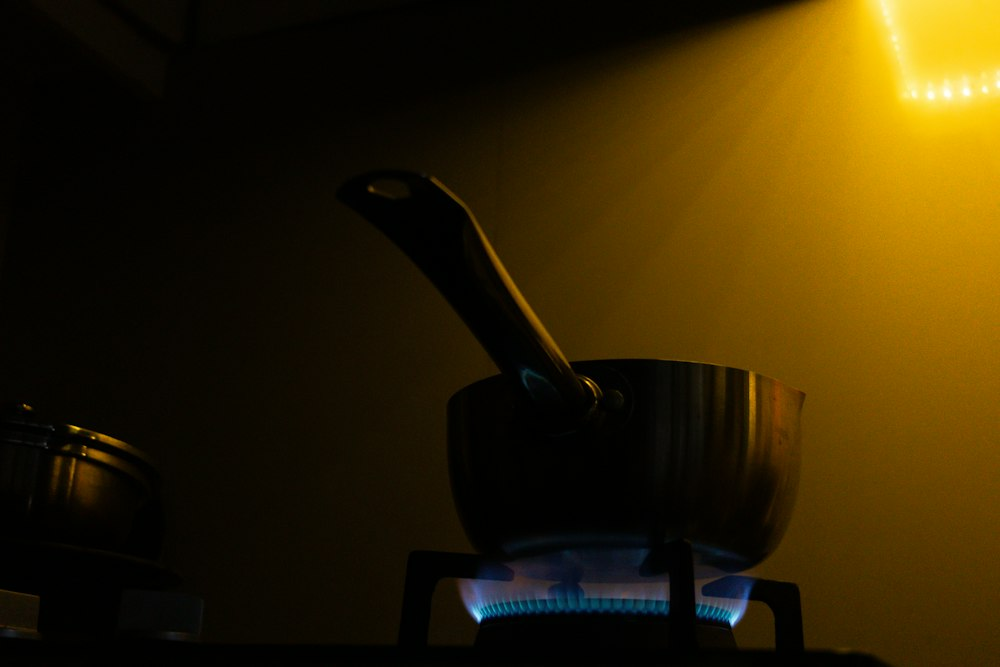

Chrome lost your tabs after a restart? How to get them back
Short answer
Don't close Chrome again. In the empty window, press Ctrl+Shift+T (⌘+Shift+T on a Mac): it usually reopens the window you had, with all its tabs. If it doesn't, open the ⋮ menu → History and look under Recently closed for an entry such as "12 tabs". Then set Settings → On startup to Continue where you left off so a restart brings them back by itself.

First, don't restart again
Chrome keeps a record of your last session so it can bring it back. Each time you close and reopen Chrome, that record is replaced by the new, empty one. So before anything else, leave the window that's open and work from there.
Try these, in this order
- Press Restore if Chrome offers it. After a crash or a forced restart, Chrome often shows Restore pages? at the top right. Press Restore and every window comes back.
- Reopen the last window. Press Ctrl+Shift+T (⌘+Shift+T on a Mac). In a fresh session this reopens the last window you had, with its tabs. Press it again to bring back the window before that.
- Look in Recently closed. Open the ⋮ menu and point to History. Windows are listed with how many tabs they held, such as "12 tabs". Click one to reopen the whole window.
- Check you're in the right profile. After an update Chrome sometimes opens a different profile, or signs you out. Click the profile picture at the top right: your tabs may be waiting in the other one.
- Search your history. Press Ctrl+H (⌘+Y on a Mac) and search for a word from a page you remember. History keeps single pages, not the set, but it finds anything you visited.
- Look on your other devices. If you sync Chrome, the History page has Tabs from other devices, which lists what's open on your phone or other computers.
Tabs from Incognito windows are never kept, so they can't be brought back this way.
Make restarts bring your tabs back
Open Settings, choose On startup, and pick Continue where you left off. Chrome then reopens your windows whenever it starts, after an update or a restart. When Chrome asks you to relaunch for an update, use its own Relaunch button rather than quitting: it reopens your windows as they were. For the shortcuts above and the rest, see the Chrome tab shortcuts cheat sheet.
Keep what matters somewhere a restart can't touch
Continue where you left off depends on Chrome having a good record of your last session, and that record is the first thing a crash or a wrong click can lose. The safest tabs are the ones that are already saved before anything goes wrong.
That's what Simmer's back burner is for. It sorts your open tabs into the things you're in the middle of, and when you put a task away, every tab of it is saved first, in Chrome's storage on your computer and in your bookmarks if you choose. A task on the back burner doesn't depend on the session, so it's still there after a restart, an update or a crash, and Bring back reopens it whole, in its group. You can also turn on automatic backups, which write a file to Downloads/Simmer.
To be plain about it: Simmer doesn't take snapshots of every open window, and it doesn't sync between computers. Tabs you still have open are covered by Chrome's own settings above; Simmer keeps the ones you've put away. For coming back to a task days later, see how to pick up where you left off.
Questions
- Why did Chrome lose all my tabs after an update?
- Usually because Chrome is set to open the New Tab page on startup, so a restart starts fresh. Press Ctrl+Shift+T (⌘+Shift+T on a Mac) in the new window, or look under History → Recently closed, then set On startup to Continue where you left off.
- How do I restore Chrome tabs after a crash?
- Press Restore on the Restore pages? message if Chrome shows it. If you missed it, press Ctrl+Shift+T (⌘+Shift+T on a Mac) or open History → Recently closed and click the window with your tabs.
- Can I get my tabs back if I closed and reopened Chrome several times?
- Sometimes. Recently closed may still list the window, and History has every page you visited, one at a time. Each restart replaces Chrome's record of the last session, so try the steps before reopening Chrome again.
- Will Simmer bring back tabs that were open when Chrome crashed?
- No. Simmer doesn't snapshot open windows. Tasks you put on the back burner are saved, so they are still there after a crash or restart, and Bring back reopens them whole.